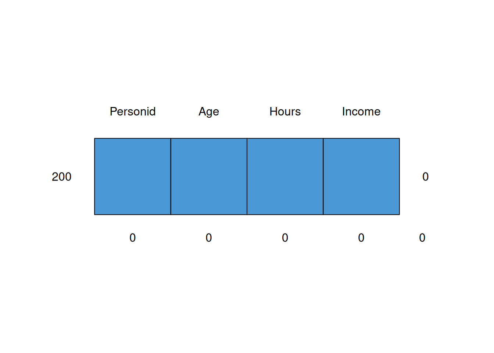

9 Imputation
Dealing with item non-response
Can do complete case analysis, but that risks both bias and loss of precision due to reduced sample size.
Another option is imputation: fill in the data using a model. All such models involve untestable assumptions.
Remove some data: marital status and income
set.seed(111)
msurf <- surf
msurf$Marital[sample(nrow(surf),10)] <- NA
msurf$Income[sample(nrow(surf),10)] <- NA
table(msurf$Marital,exclude=NULL)##
## married never other previously <NA>
## 68 82 20 20 10## [1] 10Mean imputation/cell mean imputation: method = ‘mean’ Median imputation/cell median imputation: Hot deck cell imputation: method = ‘sample’ within cells Regression imputation
Don’t impute a column by setting the method=“” for that column
‘blocks’ are sets of variables, treated similarly
##
## iter imp variable
## 1 1 Income
## 1 2 Income
## 1 3 Income
## 1 4 Income
## 1 5 Income
## 2 1 Income
## 2 2 Income
## 2 3 Income
## 2 4 Income
## 2 5 Income
## 3 1 Income
## 3 2 Income
## 3 3 Income
## 3 4 Income
## 3 5 Income
## 4 1 Income
## 4 2 Income
## 4 3 Income
## 4 4 Income
## 4 5 Income
## 5 1 Income
## 5 2 Income
## 5 3 Income
## 5 4 Income
## 5 5 Income## Warning: Number of logged events: 4## Class: mids
## Number of multiple imputations: 5
## Imputation methods:
## Personid Gender Qualification Age Hours
## "" "" "" "" ""
## Income Marital Ethnicity
## "pmm" "" ""
## PredictorMatrix:
## Personid Gender Qualification Age Hours Income Marital Ethnicity
## Personid 0 0 0 1 1 1 0 0
## Gender 1 0 0 1 1 1 0 0
## Qualification 1 0 0 1 1 1 0 0
## Age 1 0 0 0 1 1 0 0
## Hours 1 0 0 1 0 1 0 0
## Income 1 0 0 1 1 0 0 0
## Number of logged events: 4
## it im dep meth out
## 1 0 0 constant Gender
## 2 0 0 constant Qualification
## 3 0 0 constant Marital
## 4 0 0 constant EthnicityExample dataset supplied with mice is nhanes - note all variables are numeric
mnhanes <- mice::nhanes
mnhanes$age <- factor(mnhanes$age)
mnhanes <- data.frame(id=factor(1:nrow(mnhanes)),mnhanes)
dim(mnhanes) # 25 x 5## [1] 25 5## id age bmi hyp chl
## 1 : 1 1:12 Min. :20.40 Min. :1.000 Min. :113.0
## 2 : 1 2: 7 1st Qu.:22.65 1st Qu.:1.000 1st Qu.:185.0
## 3 : 1 3: 6 Median :26.75 Median :1.000 Median :187.0
## 4 : 1 Mean :26.56 Mean :1.235 Mean :191.4
## 5 : 1 3rd Qu.:28.93 3rd Qu.:1.000 3rd Qu.:212.0
## 6 : 1 Max. :35.30 Max. :2.000 Max. :284.0
## (Other):19 NA's :9 NA's :8 NA's :10Surf data is a mixture of numeric and categorical variables
## Personid Gender Qualification Age
## Min. : 1.00 Length:200 Length:200 Min. :15.00
## 1st Qu.: 50.75 Class :character Class :character 1st Qu.:22.75
## Median :100.50 Mode :character Mode :character Median :32.00
## Mean :100.50 Mean :30.69
## 3rd Qu.:150.25 3rd Qu.:38.00
## Max. :200.00 Max. :45.00
##
## Hours Income Marital Ethnicity
## Min. : 2.00 Min. : 11.0 Length:200 Length:200
## 1st Qu.:20.00 1st Qu.: 355.2 Class :character Class :character
## Median :40.00 Median : 532.5 Mode :character Mode :character
## Mean :33.71 Mean : 586.9
## 3rd Qu.:45.00 3rd Qu.: 819.8
## Max. :70.00 Max. :1789.0
## NA's :10Inspect missing pattern

## id age hyp bmi chl
## 13 1 1 1 1 1 0
## 3 1 1 1 1 0 1
## 1 1 1 1 0 1 1
## 1 1 1 0 0 1 2
## 7 1 1 0 0 0 3
## 0 0 8 9 10 27
## Personid Gender Qualification Age Hours Ethnicity Income Marital
## 181 1 1 1 1 1 1 1 1 0
## 9 1 1 1 1 1 1 1 0 1
## 9 1 1 1 1 1 1 0 1 1
## 1 1 1 1 1 1 1 0 0 2
## 0 0 0 0 0 0 10 10 20Overall mean imputation
##
## iter imp variable
## 1 1 bmi hyp chl## Warning: Number of logged events: 6## /\ /\
## { `---' }
## { O O }
## ==> V <== No need for mice. This data set is completely observed.
## \ \|/ /
## `-----'
## id age bmi hyp chl
## 25 1 1 1 1 1 0
## 0 0 0 0 0 0Overall mean imputation
##
## iter imp variable
## 1 1 bmi hyp chl
## 2 1 bmi hyp chl
## 3 1 bmi hyp chl
## 4 1 bmi hyp chl
## 5 1 bmi hyp chl## Warning: Number of logged events: 18Cell mean imputation
mnhanes.cellmean <- do.call(rbind,
by(mnhanes, mnhanes$age,
function(dsub) complete(mice(dsub, method="mean", m=1)))) ##
## iter imp variable
## 1 1 bmi chl
## 2 1 bmi chl
## 3 1 bmi chl
## 4 1 bmi chl
## 5 1 bmi chl## Warning: Number of logged events: 14##
## iter imp variable
## 1 1 bmi hyp chl
## 2 1 bmi hyp chl
## 3 1 bmi hyp chl
## 4 1 bmi hyp chl
## 5 1 bmi hyp chl## Warning: Number of logged events: 19##
## iter imp variable
## 1 1 bmi hyp
## 2 1 bmi hyp
## 3 1 bmi hyp
## 4 1 bmi hyp
## 5 1 bmi hyp## Warning: Number of logged events: 14Compare
## id age bmi hyp chl
## 1 1 1 26.5625 1.235294 191.4
## 3 3 1 26.5625 1.000000 187.0
## 4 4 3 26.5625 1.235294 191.4
## 6 6 3 26.5625 1.235294 184.0
## 10 10 2 26.5625 1.235294 191.4
## 11 11 1 26.5625 1.235294 191.4
## 12 12 2 26.5625 1.235294 191.4
## 16 16 1 26.5625 1.235294 191.4
## 21 21 1 26.5625 1.235294 191.4## id age bmi hyp chl
## 1.1 1 1 28.37143 NA 169.0
## 1.3 3 1 28.37143 1.0 187.0
## 3.4 4 3 24.82500 1.5 NA
## 3.6 6 3 24.82500 1.5 184.0
## 2.10 10 2 25.42000 1.4 202.8
## 1.11 11 1 28.37143 NA 169.0
## 2.12 12 2 25.42000 1.4 202.8
## 1.16 16 1 28.37143 NA 169.0
## 1.21 21 1 28.37143 NA 169.0Repeat cell mean imputation using the regression formulation
allvarnames <- names(mnhanes)
blocks <- as.list(allvarnames) # each variable in its own block
names(blocks) <- allvarnames
method <- rep("",length(allvarnames)) # method for each block: start with no imputation
names(method) <- allvarnames
formulas <- as.list(rep("~1", length(allvarnames)))
names(formulas) <- allvarnames
formulas <- lapply(formulas, formula)
method["bmi"] <- "norm.predict" # we're only going to impute bmi, by regression imputation
formulas[["bmi"]] <- formula(~age)
mnhanes.cellmeanregf <- mnhanes |>
mice(m=1, method=method, blocks=blocks, formulas=formulas) |>
complete()##
## iter imp variable
## 1 1 bmi
## 2 1 bmi
## 3 1 bmi
## 4 1 bmi
## 5 1 bmi## id age bmi hyp chl
## 1 1 1 28.37143 NA NA
## 2 2 2 22.70000 1 187
## 3 3 1 28.37143 1 187
## 4 4 3 24.82500 NA NA
## 5 5 1 20.40000 1 113
## 6 6 3 24.82500 NA 184
## 7 7 1 22.50000 1 118
## 8 8 1 30.10000 1 187
## 9 9 2 22.00000 1 238
## 10 10 2 25.42000 NA NA
## 11 11 1 28.37143 NA NA
## 12 12 2 25.42000 NA NA
## 13 13 3 21.70000 1 206
## 14 14 2 28.70000 2 204
## 15 15 1 29.60000 1 NA
## 16 16 1 28.37143 NA NA
## 17 17 3 27.20000 2 284
## 18 18 2 26.30000 2 199
## 19 19 1 35.30000 1 218
## 20 20 3 25.50000 2 NA
## 21 21 1 28.37143 NA NA
## 22 22 1 33.20000 1 229
## 23 23 1 27.50000 1 131
## 24 24 3 24.90000 1 NA
## 25 25 2 27.40000 1 186Compare
## id age bmi hyp chl
## 1 1 1 26.5625 1.235294 191.4
## 3 3 1 26.5625 1.000000 187.0
## 4 4 3 26.5625 1.235294 191.4
## 6 6 3 26.5625 1.235294 184.0
## 10 10 2 26.5625 1.235294 191.4
## 11 11 1 26.5625 1.235294 191.4
## 12 12 2 26.5625 1.235294 191.4
## 16 16 1 26.5625 1.235294 191.4
## 21 21 1 26.5625 1.235294 191.4## id age bmi hyp chl
## 1.1 1 1 28.37143 NA 169.0
## 1.3 3 1 28.37143 1.0 187.0
## 3.4 4 3 24.82500 1.5 NA
## 3.6 6 3 24.82500 1.5 184.0
## 2.10 10 2 25.42000 1.4 202.8
## 1.11 11 1 28.37143 NA 169.0
## 2.12 12 2 25.42000 1.4 202.8
## 1.16 16 1 28.37143 NA 169.0
## 1.21 21 1 28.37143 NA 169.0## id age bmi hyp chl
## 1 1 1 28.37143 NA NA
## 3 3 1 28.37143 1 187
## 4 4 3 24.82500 NA NA
## 6 6 3 24.82500 NA 184
## 10 10 2 25.42000 NA NA
## 11 11 1 28.37143 NA NA
## 12 12 2 25.42000 NA NA
## 16 16 1 28.37143 NA NA
## 21 21 1 28.37143 NA NAMeans of numeric and modes of categorical variables
getmeanmode <- function(df) {
as.data.frame(lapply(df,
function(x) {
if(is.factor(x) || is.character(x)) {
xt <- table(x)
mval <- names(xt)[which.max(xt)]
} else if(is.numeric(x)) {
mval <- mean(x, na.rm=TRUE)
} else {
mval <- NA
}
return(mval)
}))
}## id age bmi hyp chl
## 1 1 1 26.5625 1.235294 191.4## $id
## factor()
## 25 Levels: 1 2 3 4 5 6 7 8 9 10 11 12 13 14 15 16 17 18 19 20 21 22 23 ... 25
##
## $age
## factor()
## Levels: 1 2 3
##
## $bmi
## [1] 26.5625 26.5625 26.5625 26.5625 26.5625 26.5625 26.5625 26.5625 26.5625
##
## $hyp
## [1] 1.235294 1.235294 1.235294 1.235294 1.235294 1.235294 1.235294 1.235294
##
## $chl
## [1] 191.4 191.4 191.4 191.4 191.4 191.4 191.4 191.4 191.4 191.4Just do the numerical variables (gives a warning because Marital is categorical)
##
## iter imp variable
## 1 1 Income## Warning: Number of logged events: 4
## Personid Gender Qualification Age Hours Income Ethnicity Marital
## 190 1 1 1 1 1 1 1 1 0
## 10 1 1 1 1 1 1 1 0 1
## 0 0 0 0 0 0 0 10 10Avoid the error
##
## iter imp variable
## 1 1 Income## /\ /\
## { `---' }
## { O O }
## ==> V <== No need for mice. This data set is completely observed.
## \ \|/ /
## `-----'
## Personid Age Hours Income
## 200 1 1 1 1 0
## 0 0 0 0 0Hot deck imputation
##
## iter imp variable
## 1 1 bmi hyp chl
## 2 1 bmi hyp chl
## 3 1 bmi hyp chl
## 4 1 bmi hyp chl
## 5 1 bmi hyp chl## Warning: Number of logged events: 18## id age bmi hyp chl
## 1 1 1 27.5 1 206
## 3 3 1 25.5 1 187
## 4 4 3 33.2 1 131
## 6 6 3 22.5 1 184
## 10 10 2 27.2 2 131
## 11 11 1 28.7 1 184
## 12 12 2 21.7 1 204
## 16 16 1 26.3 1 187
## 21 21 1 27.2 1 184##
## 20.4 21.7 22 22.5 22.7 24.9 25.5 26.3 27.2 27.4 27.5 28.7 29.6 30.1 33.2 35.3
## 1 1 1 1 1 1 1 1 1 1 1 1 1 1 1 1
## <NA>
## 9##
## 20.4 21.7 22 22.5 22.7 24.9 25.5 26.3 27.2 27.4 27.5 28.7 29.6 30.1 33.2 35.3
## 1 2 1 2 1 1 2 2 3 1 2 2 1 1 2 1Hot deck within cells [*** not yet done ***]
##
## iter imp variable
## 1 1 bmi hyp chl
## 2 1 bmi hyp chl
## 3 1 bmi hyp chl
## 4 1 bmi hyp chl
## 5 1 bmi hyp chl## Warning: Number of logged events: 18## id age bmi hyp chl
## 1 1 1 27.5 1 206
## 3 3 1 25.5 1 187
## 4 4 3 33.2 1 131
## 6 6 3 22.5 1 184
## 10 10 2 27.2 2 131
## 11 11 1 28.7 1 184
## 12 12 2 21.7 1 204
## 16 16 1 26.3 1 187
## 21 21 1 27.2 1 184##
## 20.4 21.7 22 22.5 22.7 24.9 25.5 26.3 27.2 27.4 27.5 28.7 29.6 30.1 33.2 35.3
## 1 1 1 1 1 1 1 1 1 1 1 1 1 1 1 1
## <NA>
## 9##
## 20.4 21.7 22 22.5 22.7 24.9 25.5 26.3 27.2 27.4 27.5 28.7 29.6 30.1 33.2 35.3
## 1 2 1 2 1 1 2 2 3 1 2 2 1 1 2 1Regression imputation
Use regressions on all available observations?
##
## iter imp variable
## 1 1 bmi* hyp chl*## Warning: Number of logged events: 6## id age bmi hyp chl
## 1 1 1 26.5625 1.235294 191.4
## 3 3 1 26.5625 1.000000 187.0
## 4 4 3 26.5625 1.235294 191.4
## 6 6 3 26.5625 1.235294 184.0
## 10 10 2 26.5625 1.235294 191.4
## 11 11 1 26.5625 1.235294 191.4
## 12 12 2 26.5625 1.235294 191.4
## 16 16 1 26.5625 1.235294 191.4
## 21 21 1 26.5625 1.235294 191.4## id age bmi hyp chl
## 1 1 1 NA NA NA
## 3 3 1 NA 1 187
## 4 4 3 NA NA NA
## 6 6 3 NA NA 184
## 10 10 2 NA NA NA
## 11 11 1 NA NA NA
## 12 12 2 NA NA NA
## 16 16 1 NA NA NA
## 21 21 1 NA NA NAMultiple imputation
Instead of imputing a single value for each missing observation, we impute several possible imputed values - we end up with multiple completed data sets. The variability among estimates from these separate completed data sets gives us additional insight into the effect of our imputations, and the uncertainty we have associated with having missing data.
The confidence we can have regarding the true scale of the uncertainty depends on how strongly we believe in the model we’ve used to impute.
Hot deck multiple imputation
##
## iter imp variable
## 1 1 bmi hyp chl
## 1 2 bmi hyp chl
## 1 3 bmi hyp chl
## 1 4 bmi hyp chl
## 1 5 bmi hyp chl
## 2 1 bmi hyp chl
## 2 2 bmi hyp chl
## 2 3 bmi hyp chl
## 2 4 bmi hyp chl
## 2 5 bmi hyp chl
## 3 1 bmi hyp chl
## 3 2 bmi hyp chl
## 3 3 bmi hyp chl
## 3 4 bmi hyp chl
## 3 5 bmi hyp chl
## 4 1 bmi hyp chl
## 4 2 bmi hyp chl
## 4 3 bmi hyp chl
## 4 4 bmi hyp chl
## 4 5 bmi hyp chl
## 5 1 bmi hyp chl
## 5 2 bmi hyp chl
## 5 3 bmi hyp chl
## 5 4 bmi hyp chl
## 5 5 bmi hyp chl## Warning: Number of logged events: 90## id age bmi hyp chl
## 1 1 1 35.3 1 118
## 3 3 1 22.0 1 187
## 4 4 3 35.3 1 118
## 6 6 3 24.9 1 184
## 10 10 2 24.9 1 206
## 11 11 1 27.2 1 187
## 12 12 2 29.6 1 184
## 16 16 1 26.3 1 199
## 21 21 1 24.9 2 229Regression mean imputation
##
## iter imp variable
## 1 1 bmi* hyp chl*## Warning: Number of logged events: 6## Class: mids
## Number of multiple imputations: 1
## Imputation methods:
## id age bmi hyp chl
## "" "" "norm.nob" "norm.nob" "norm.nob"
## PredictorMatrix:
## id age bmi hyp chl
## id 0 1 1 1 1
## age 1 0 1 1 1
## bmi 1 1 0 1 1
## hyp 1 1 1 0 1
## chl 1 1 1 1 0
## Number of logged events: 6
## it im dep meth
## 1 1 1 bmi norm.nob
## 2 1 1 bmi norm.nob
## 3 1 1 bmi norm.nob
## 4 1 1 chl norm.nob
## 5 1 1 chl norm.nob
## 6 1 1 chl norm.nob
## out
## 1 df set to 1. # observed cases: 16 # predictors: 29
## 2 id3, id4, id6, id10, id11, id12, id16, id20, id21, age2, age3, hyp
## 3 mice detected that your data are (nearly) multi-collinear.\nIt applied a ridge penalty to continue calculations, but the results can be unstable.\nDoes your dataset contain duplicates, linear transformation, or factors with unique respondent names?
## 4 df set to 1. # observed cases: 13 # predictors: 29
## 5 id3, id4, id6, id9, id10, id11, id12, id15, id16, id17, id20, id21, id24, age2, bmi
## 6 mice detected that your data are (nearly) multi-collinear.\nIt applied a ridge penalty to continue calculations, but the results can be unstable.\nDoes your dataset contain duplicates, linear transformation, or factors with unique respondent names?Stochastic regression imputation: we sample from the fitted distribution
##
## iter imp variable
## 1 1 bmi* hyp chl*## Warning: Number of logged events: 6## Class: mids
## Number of multiple imputations: 1
## Imputation methods:
## id age bmi hyp chl
## "" "" "norm.nob" "norm.nob" "norm.nob"
## PredictorMatrix:
## id age bmi hyp chl
## id 0 1 1 1 1
## age 1 0 1 1 1
## bmi 1 1 0 1 1
## hyp 1 1 1 0 1
## chl 1 1 1 1 0
## Number of logged events: 6
## it im dep meth
## 1 1 1 bmi norm.nob
## 2 1 1 bmi norm.nob
## 3 1 1 bmi norm.nob
## 4 1 1 chl norm.nob
## 5 1 1 chl norm.nob
## 6 1 1 chl norm.nob
## out
## 1 df set to 1. # observed cases: 16 # predictors: 29
## 2 id3, id4, id6, id10, id11, id12, id16, id20, id21, age2, age3, hyp
## 3 mice detected that your data are (nearly) multi-collinear.\nIt applied a ridge penalty to continue calculations, but the results can be unstable.\nDoes your dataset contain duplicates, linear transformation, or factors with unique respondent names?
## 4 df set to 1. # observed cases: 13 # predictors: 29
## 5 id3, id4, id6, id9, id10, id11, id12, id15, id16, id17, id20, id21, id24, age2, bmi
## 6 mice detected that your data are (nearly) multi-collinear.\nIt applied a ridge penalty to continue calculations, but the results can be unstable.\nDoes your dataset contain duplicates, linear transformation, or factors with unique respondent names?